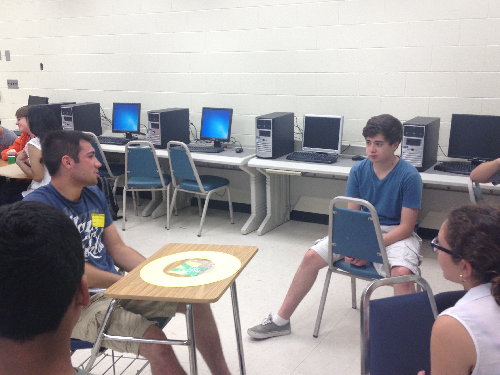
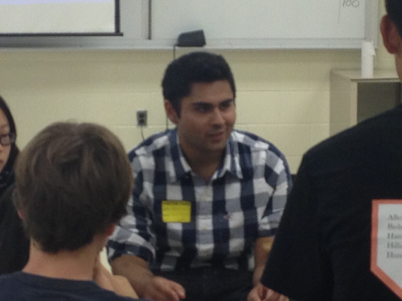
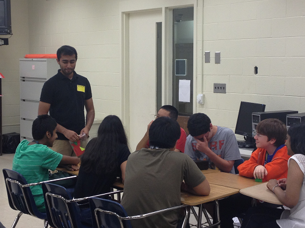
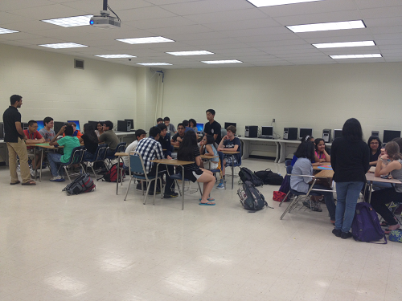

Community Outreach
For community outreach, the 2013 Rutgers iGEM team thought to visit a local High School in hopes of giving a presentation on the new and rising field of synthetic biology, and to educate the students about the excellent opportunities and experiences G.E.A.R.S. and iGEM can provide. During our search for the best suited High School, the team stumbled upon an advanced magnet High School that focuses on the sciences for their students futures. It is called The Academy for Health and Medical Sciences located in Bridgewater, New Jersey. This school hand selects its students from local districts, and caps its classes at 35 students per graduating class. The reason for all of this is because these students will take on a rigorous coursework of completing an Associates Degree in General Science and Mathematics from a local college over the course of the four years they have to also earn their High School diploma.
After hearing all this, the Rutgers iGEM team decided to take their talents to educating this fine group of young scholars, specifically their freshman class. The lesson plan was simple, yet very informative. A lecture was given on the basics synthetic biology, followed by a group construction of Rutgers iGEM team’s plasmid, and finally a discussion of potential advances that can be made in the world by using synthetic biology.
At the end of the day, everyone on the team pronounced the community outreach a complete success. The bright students did not fail to impress either. From actively listening to the presentation about synthetic biology; a field they all had not heard of before, and the clever applications they thought of such as cloud detecting thermosensing, and plaque-eating bacteria that can live in your mouth so you don’t have to brush your teeth. It was clear the students and teachers appreciated the hard work the Rutgers iGEM team put into this.
   